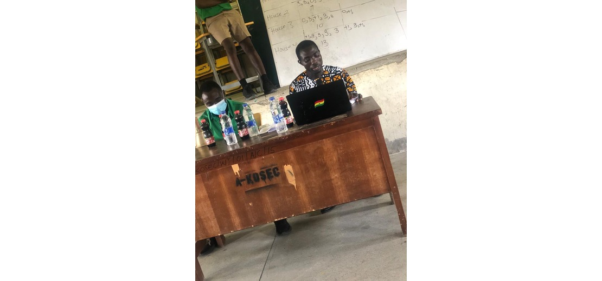
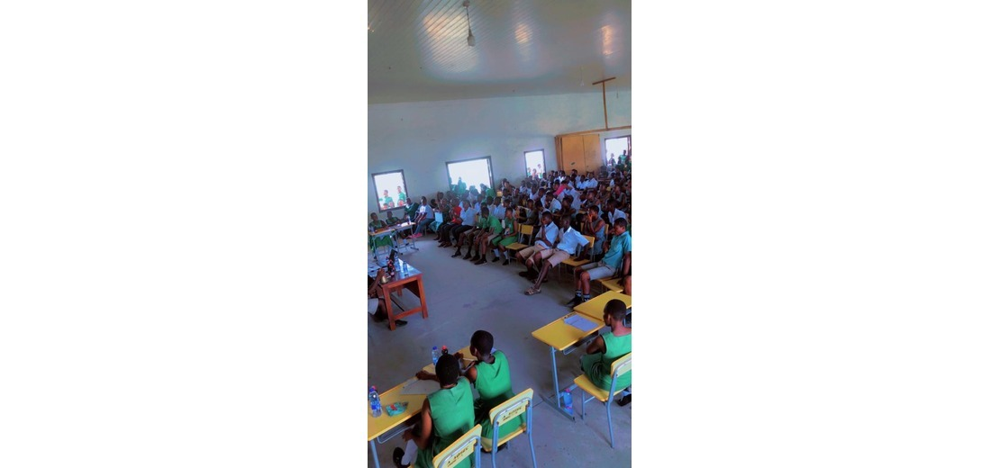
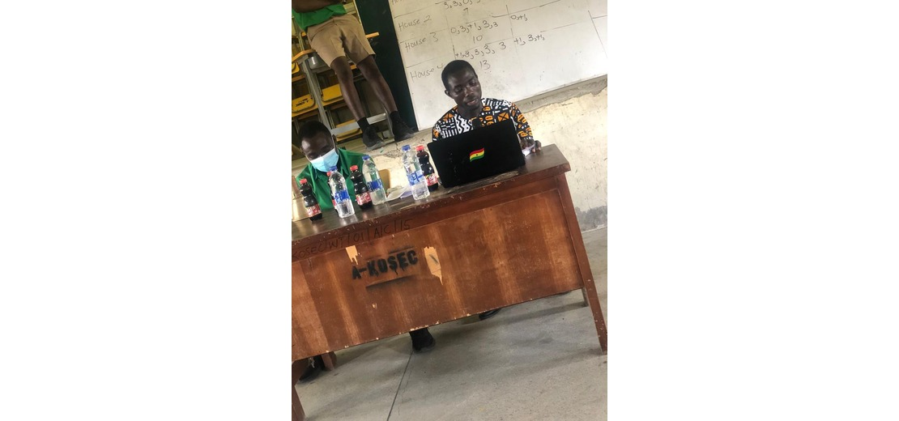
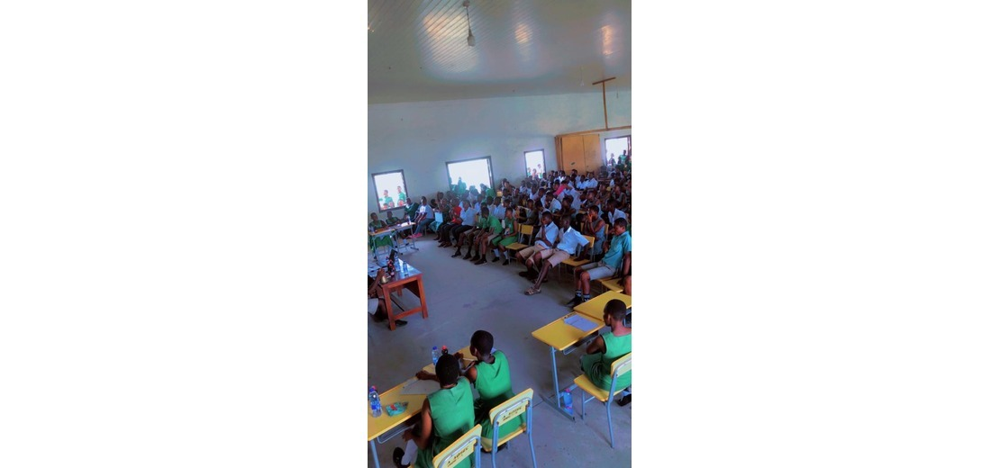

Health Screening (Amasan Market)
Health screening is a proactive approach to assess and detect potential health issues early on. Through various tests and evaluations, health screening helps identify risk factors and enables timely intervention. It typically includes measurements like blood pressure, cholesterol levels, and screenings for conditions such as diabetes. Regular health screening empowers individuals to take control of their well-being, fostering preventive healthcare and early disease detection. By staying informed about one's health status, individuals can make informed lifestyle choices, leading to a healthier and more fulfilling life.
 


